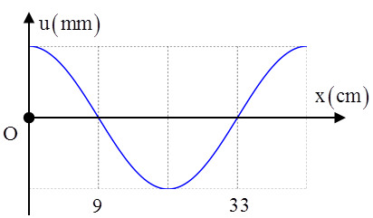
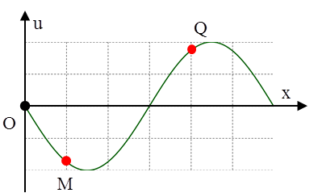
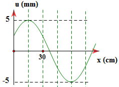

Một sóng hình sin truyền trên một sợi dây dài. Ở thời điểm t, hình dạng của một đoạn dây như hình vẽ. Các vị trí cân bằng của các phần tử trên dây cùng nằm trên trục Ox. Bước sóng của sóng này bằng
Trên một sợi dây dài đang có sóng ngang hình sin truyền qua theo chiều dương của trục Ox. Tại thời điểm $t_0$, một đoạn của sợi dây có hình dạng như hình bên. Hai phần tử dây tại M và Q dao động lệch pha nhau
Một sóng cơ đang truyền theo chiều dương của trục Ox như hình vẽ. Bước sóng làNhập thông tin để hệ thống ghi nhận kết quả.